Chapter 7 Introduction
“Prévoir consiste à projeter dans l’avenir ce qu’on a perçu dans le passé.” – Henri Bergson
After reading this chapter you will be able to:
- Describe what a time series is.
- Perform exploratory data analysis on time series data.
- Evaluate different characteristics of a time series.
- Classify basic time series models through equations and plots.
- Manipulate a time series equation using backsubstitution.
7.1 Time Series
Generally speaking a time series (or stochastic process) corresponds to set of “repeated” observations of the same variable such as price of a financial asset or temperature in a given location. In terms of notation a time series is often written as
\[\left(X_1, X_2, ..., X_n \right) \;\;\; \text{ or } \;\;\; \left(X_t\right)_{t = 1,...,n}.\]
The time index \(t\) is contained within either the set of reals, \(\mathbb{R}\), or integers, \(\mathbb{N}\). When \(t \in \mathbb{R}\), the time series becomes a continuous-time stochastic process such a Brownian motion, a model used to represent the random movement of particles within a suspended liquid or gas, or an ElectroCardioGram (ECG) signal, which corresponds to the palpitations of the heart. However, within this text, we will limit ourselves to the cases where \(t \in \mathbb{N}\), better known as discrete-time processes. Discrete-time processes are where a variable is measured sequentially at fixed and equally spaced intervals in time. This implies that we will have two assumptions:
- \(t\) is not random, e.g. the time at which each observation is measured is known, and
- the time between two consecutive observations is constant.
Moreover, the term “time series” can also represent a probability model for a set of observations. For example, one of the fundamental probability models used in time series analysis is called a white noise process and is defined as
\[W_t \mathop \sim \limits^{iid} N(0, \sigma^2).\]
This statement simply means that \((W_t)\) is normally distributed and independent over time. This model may appear to be dull but we will soon see it as a crucial component to constructing more complex models. Unlike the white noise process, time series are typically not independent over time. Suppose that the temperature in Champaign is unusually low, then it is reasonable to assume that tomorrow’s temperature will also be low. Indeed, such behavior would suggest the existence of a dependency over time. The time series methods we will discuss in this text consists of parametric models used to characterize (or at least approximate) the joint distribution of \((X_t)\). Often, time series models can be decomposed into two components, the first of which is what we call a signal, say \((Y_t)\), and the second component is a noise, say \((W_t)\), leading to the model
\[X_t = Y_t + W_t.\]
Typically, we have \(\mathbb{E}[Y_t] \neq 0\) while \(\mathbb{E}[W_t] = 0\) (although we may have \(\mathbb{E}[W_t | W_{t-1}, ..., W_1] \neq 0\)). Such models impose some parametric structure which represents a convenient and flexible way of studying time series as well as a means to evaluate future values of the series through forecasting. As we will see, predicting future values is one of the main aspects of time series analysis. However, making predictions is often a daunting task or as famously stated by Nils Bohr:
“Prediction is very difficult, especially about the future.”
There are plenty of examples of predictions that turned out to be completely erroneous. For example, three days before the 1929 crash, Irving Fisher, Professor of Economics at Yale University, famously predicted:
“Stock prices have reached what looks like a permanently high plateau”.
Another example is given by Thomas Watson, president of IBM, who said in 1943:
“I think there is a world market for maybe five computers.”
7.2 Exploratory Data Analysis for Time Series
When dealing with relatively small time series (e.g. a few thousands), it is often useful to look at a graph of the original data. A graph can be an informative tool for “detecting” some features of a time series such as trends and the presence of outliers.
Indeed, a trend is typically assumed to be present in a time series when the data exhibit some form of long term increase or decrease or combination of increases or decreases. Such trends could be linear or non-linear and represent an important part of the “signal” of a model. Here are a few examples of non-linear trends:
Seasonal trends (periodic): These are the cyclical patterns which repeat after a fixed/regular time period. This could be due to business cycles (e.g. bust/recession, recovery).
Non-seasonal trends (periodic): These patterns cannot be associated to seasonal variation and can for example be due to an external variable such as, for example, the impact of economic indicators on stock returns. Note that such trends are often hard to detect based on a graphical analysis of the data.
“Other” trends: These trends have typically no regular patterns and are over a segment of time, known as a “window”, that change the statistical properties of a time series. A common example of such trends is given by the vibrations observed before, during and after an earthquake.
# Load data
data(jj, package = "astsa")
# Construct gts object
jj = gts(jj, start = 1960, freq = 4, unit_ts = "$", name_ts = "Earnings",
data_name = "Johnson and Johnson Quarterly Earnings")
# Plot time series
plot(jj)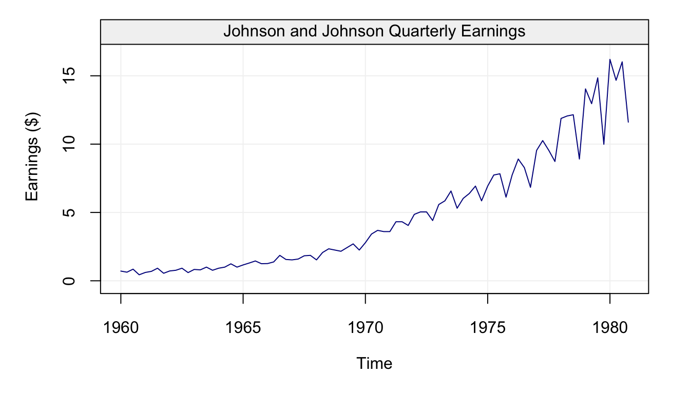
One trait that the graph makes evident is that the data contains a non-linear increasing trend as well as a yearly seasonal component. In addition, one can note that the variability of the data seems to increase with time. Being able to make such observations provides important information to select suitable models for the data.
Moreover, when observing “raw” time series data it is also interesting to evaluate if some of the following phenomena occur:
- Change in Mean: Does the mean of the process shift over time?
- Change in Variance: Does the variance of the process evolve with time?
- Change in State: Does the time series appear to change between “states” having distinct statistical properties?
- Outliers Does the time series contain some “extreme” observations? (Note that this is typically difficult to assess visually.)
# TO DO!From the graph, it can be observed that the statistical properties of the time series appear to change over time. For instance, the variance of the time series shifts at around \(t = 1150\) for both series. The shift in variance also opens “windows” where there appear to be distinct states. In the case of the explosion data, this is particularly relevant around \(t = 50, \cdots, 250\) and then again from \(t = 1200, \cdots, 1500\). Even within these windows, there are “spikes” that could be considered as outliers most notably around \(t = 1200\) in the explosion series.
Extreme observations or outliers are commonly observed in real time series data, this is illustrated in the following example.
# Load hydro dataset
data("hydro")
# Simulate based on data
hydro = gts(as.vector(hydro), start = 1907, freq = 12, unit_ts = "in.",
name_ts = "Precipitation", data_name = "Hydrology data")
# Plot hydro
plot(hydro)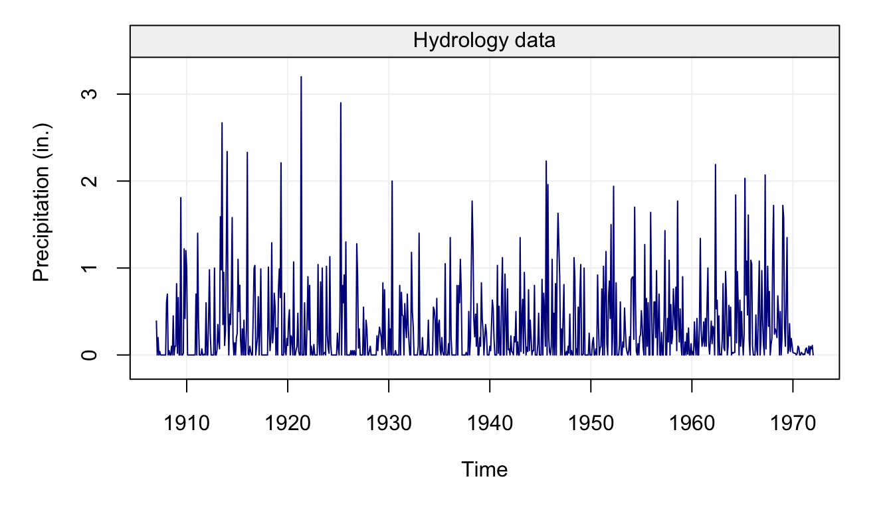
Next, we consider an example coming from high-frequency finance to illustrate the limitations our current framework.
# TO DO add Duke's code here!It can be observed on the left panel that observations are not equally spaced. Indeed, in high-frequency data the intervals between two points are typically not constant and are, even worse, random variables. This implies that the time when a new observation will be available is in general unknown. On the right panel, one can observe that the variability of the data seems to change during the course of the trading day. Such a phenomenon is well known in the finance community since a lot of variation occurs at the start (and the end) of the day while the middle of the day is associated with small changes. Moreover, clear extreme observations can also be noted in this graph at around 11:00.
Finally, let us consider the limitations of a direct graphical representation of a time series when the sample size is large. Indeed, due to visual limitations, a direct plotting of the data will probably result in an uninformative aggregation of points between which it is unable to distinguish anything. This is illustrated in the following example.
The code below retrieves some data from an IMU and plots it directly:
# Load IMU data
data(imu6, package = "imudata")
# Construct gst object
Xt = gts(imu6[,1], data_name = "Gyroscope data", unit_time = "hour",
freq = 100*60*60, name_ts = "Angular rate",
unit_ts = bquote(rad^2/s^2))
# Plot time series
plot(Xt)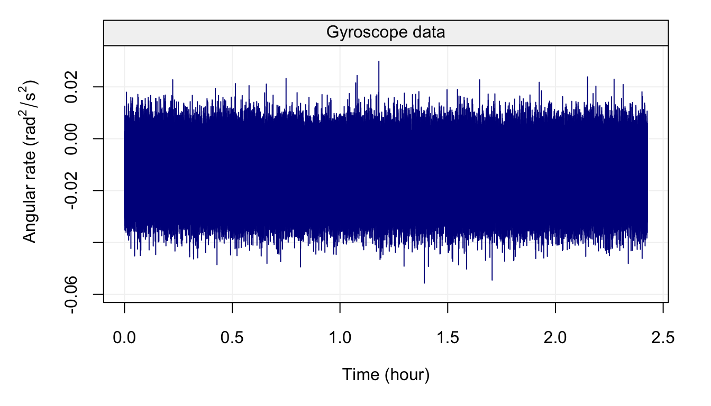
Although a linear trend and other processes are present in this signal (time series), it is practically impossible to understand or guess anything from the plot.
7.3 Basic Time Series Models
In this section, we introduce some simple time series models. Before doing so it is useful to define \(\Omega_t\) as all the information avaiable up to time \(t-1\), i.e.
\[\Omega_t = \left(X_{t-1}, X_{t-2}, ..., X_0 \right).\]
As we will see this compact notation is quite useful.
7.3.1 White noise processes
The building block for most time series models is the Gaussian white noise process, which can be defined as
\[{W_t}\mathop \sim \limits^{iid} N\left( {0,\sigma _w^2} \right).\]
This definition implies that:
- \(\mathbb{E}[W_t | \Omega_t] = 0\) for all \(t\),
- \(\cov\left(W_t, W_{t-h} \right) = \boldsymbol{1}_{h = 0} \; \sigma^2\) for all \(t, h\).
Therefore, in this process there is an absence of temporal (or serial) dependence and is homoskedastic (i.e. it has a constant variance). White noise can be generalized into two sorts of processes: weak and strong. The process \((W_t)\) is a weak white noise if
- \(\mathbb{E}[W_t] = 0\) for all \(t\),
- \(\var\left(W_t\right) = \sigma^2\) for all \(t\),
- \(\cov \left(W_t, W_{t-h}\right) = 0\), for all \(t\), and for all \(h \neq 0\).
Note that this definition does not imply that \(W_t\) and \(W_{t-h}\) are independent (for \(h \neq 0\)) but simply uncorrelated. However, the notion of independence is used to define a strong white noise as
- \(\mathbb{E}[W_t] = 0\) and \(\var(W_t) = \sigma^2 < \infty\), for all \(t\),
- \(F(W_t) = F(W_{t-h})\), for all \(t,h\) (where \(F(W_t)\) denotes the distribution of \(W_t\)),
- \(W_t\) and \(W_{t-h}\) are independent for all \(t\) and for all \(h \neq 0\).
It is clear from these definitions that if a process is a strong white noise it is also a weak white noise. However, the converse is not true as shown in the following example:
Example 7.6 Let \(Y_t \mathop \sim F_{t+2}\), where \(F_{t+2}\) denotes a Student distribution with \(t+2\) degrees of freedom. Assuming the sequence \((Y_1, \ldots, Y_n)\) to be independent, we let \(X_t = \sqrt{\frac{t}{t+2}} Y_t\). Then, the process \((X_t)\) is obviously not a strong white noise as the distribution of \(X_t\) changes with \(t\). However, this process is a weak white noise since we have:
- \(\mathbb{E}[X_t] = \sqrt{\frac{t}{t+2}} \mathbb{E}[Y_t] = 0\) for all \(t\).
- \(\var(X_t) = \frac{t}{t+2} \var(Y_t) = \frac{t}{t+2} \frac{t+2}{t} = 1\) for all \(t\).
- \(\cov(X_t, X_{t+h}) = 0\) (by independence), for all \(t\), and for all \(h \neq 0\).
The code below presents an example of how to simulate a Gaussian white noise process.
n = 1000 # process length
sigma2 = 1 # process variance
Xt = gen_gts(n, WN(sigma2 = sigma2))
plot(Xt)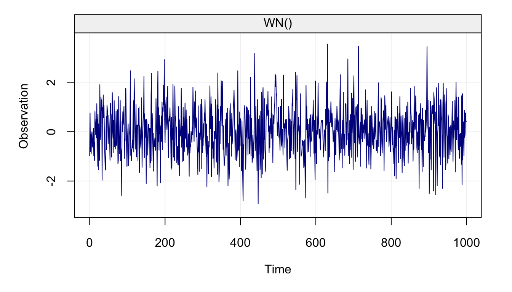
7.3.2 Random Walk Processes
The term random walk was first introduced by Karl Pearson in the early nineteen-hundreds. Regarding white noise, there exist a large range of random walk processes. For example, one of the simplest forms of a random walk process can be explained as follows: suppose that you are walking on campus and your next step can either be to your left, your right, forward or backward (each with equal probability). Two realizations of such processes are represented below:
set.seed(5)
RW2dimension(steps = 10^2)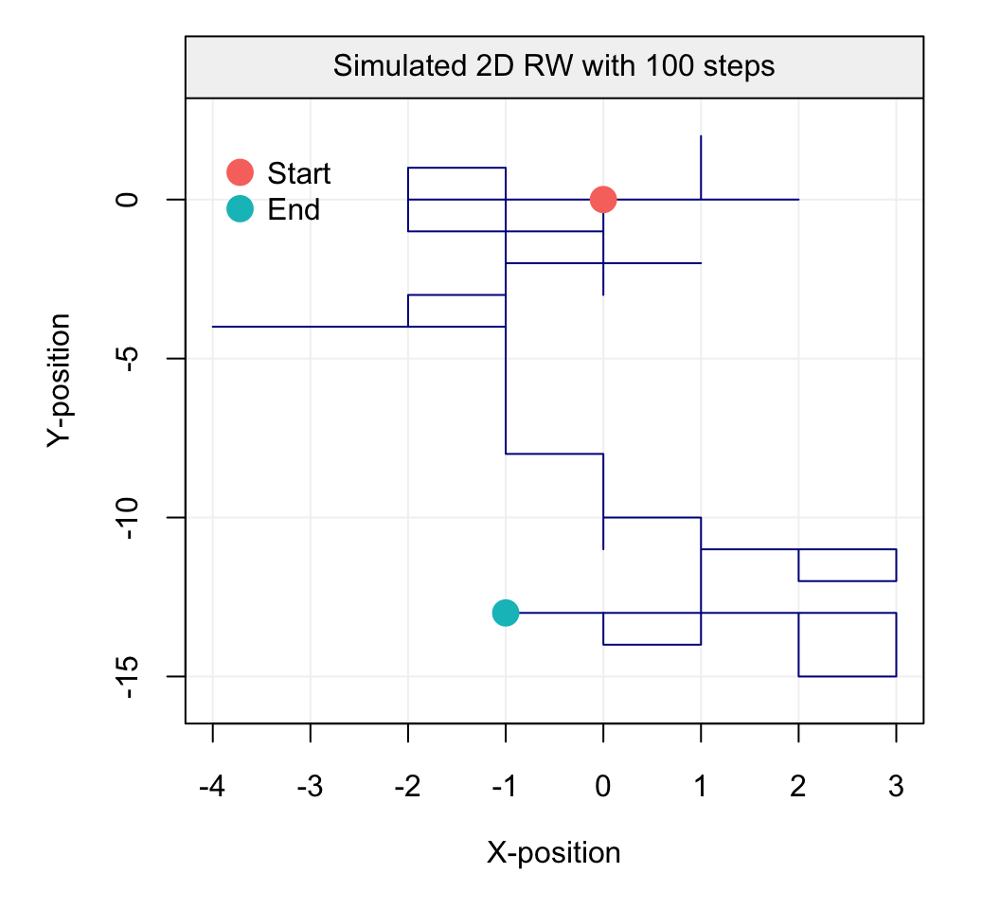
RW2dimension(steps = 10^4)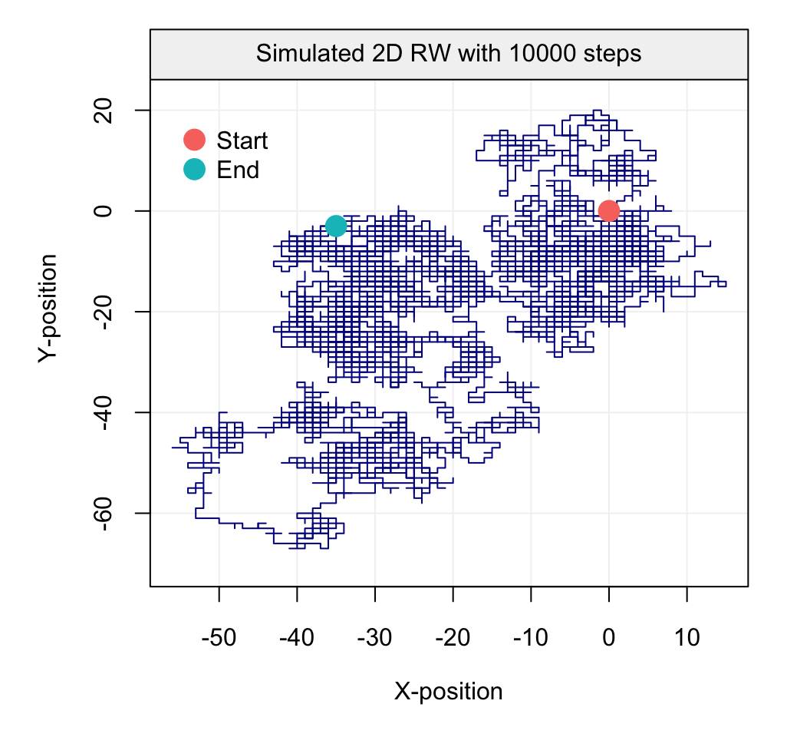
Such processes inspired Karl Pearson’s famous quote that
“the most likely place to find a drunken walker is somewhere near his starting point.”
Empirical evidence of this phenomenon is not too hard to find on a Friday night. In this text, we only consider one very specific form of random walk, namely the Gaussian random walk which can be defined as:
\[X_t = X_{t-1} + W_t,\]
where \(W_t\) is a Gaussian white noise process with initial condition \(X_0 = c\). (Typically \(c = 0\).) This process can be expressed differently by backsubstitution as follows:
\[\begin{aligned} {X_t} &= {X_{t - 1}} + {W_t} \\ &= \left( {{X_{t - 2}} + {W_{t - 1}}} \right) + {W_t} \\ &= \vdots \\ {X_t} &= \sum\limits_{i = 1}^t {{W_i}} + X_0 = \sum\limits_{i = 1}^t {{W_i}} + c \\ \end{aligned} \]
The code below presents an example of how to simulate a such process.
n = 1000 # process length
gamma2 = 1 # innovation variance
Xt = gen_gts(n, RW(gamma2 = gamma2))
plot(Xt)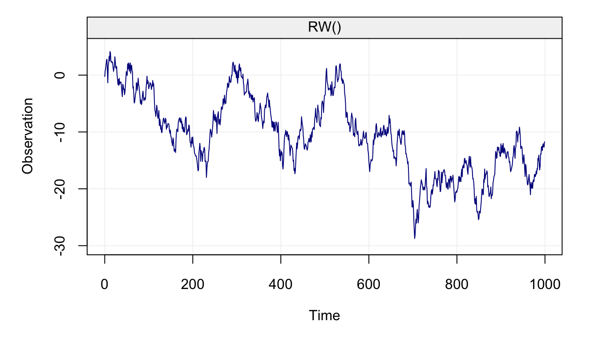
7.3.3 Autoregressive Process of Order 1
An autoregressive process of order 1 or AR(1) is a generalization of both the white noise and random walk processes which are both themselves special cases of an AR(1). A (Gaussian) AR(1) process can be defined as
\[{X_t} = {\phi}{X_{t - 1}} + {W_t},\]
where \(W_t\) is a Gaussian white noise. Clearly, an AR(1) with \(\phi = 0\) is a Gaussian white noise and when \(\phi = 1\) the process becomes a random walk.
Remark. We generally assume that an AR(1), as well as other time series models, have zero mean. The reason for this assumption is only to simplfy the notation but it is easy to consider an AR(1) process around an arbitrary mean \(\mu\), i.e.
\[\left(X_t - \mu\right) = \phi \left(X_{t-1} - \mu \right) + W_t,\]
which is of course equivalent to
\[X_t = \left(1 - \phi \right) \mu + \phi X_{t-1} + W_t.\]
Thus, we will generally only work with zero mean processes since adding means is simple.Remark. An AR(1) is in fact a linear combination of past realisations of the white noise \(W_t\) process. Indeed, we have
\[\begin{aligned} {X_t} &= {\phi_t}{X_{t - 1}} + {W_t} = {\phi}\left( {{\phi}{X_{t - 2}} + {W_{t - 1}}} \right) + {W_t} \\ &= \phi^2{X_{t - 2}} + {\phi}{W_{t - 1}} + {W_t} = {\phi^t}{X_0} + \sum\limits_{i = 0}^{t - 1} {\phi^i{W_{t - i}}}. \end{aligned}\]
Under the assumption of infinite past (i.e. \(t \in \mathbb{Z}\)) and \(|\phi| < 1\), we obtain
\[X_t = \sum\limits_{i = 0}^{\infty} {\phi^i {W_{t - i}}},\]
since \(\operatorname{lim}_{i \to \infty} \; {\phi^i}{X_{t-i}} = 0\).The code below presents an example of how an AR(1) can be simulated.
n = 1000 # process length
phi = 0.5 # phi parameter
sigma2 = 1 # innovation variance
Xt = gen_gts(n, AR1(phi = phi, sigma2 = sigma2))
plot(Xt)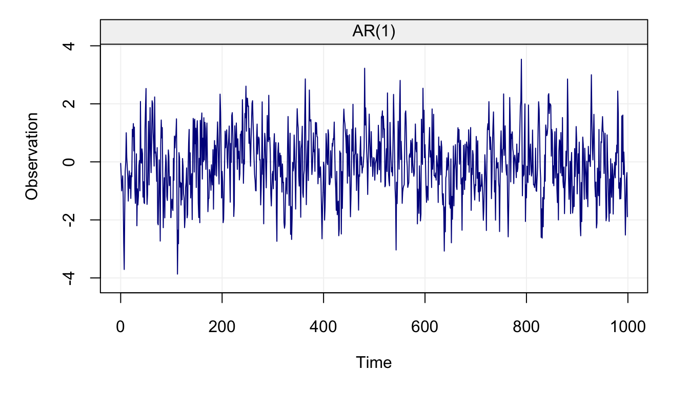
7.3.4 Moving Average Process of Order 1
As we have seen in the previous example, an AR(1) can be expressed as a linear combination of all past observations of \((W_t)\) while the next process, called a moving average process of order 1 or MA(1), is (in some sense) a “truncated” version of an AR(1). It is defined as
\[\begin{equation} X_t = \theta W_{t-1} + W_t, \end{equation}\]where (again) \(W_t\) denotes a Gaussian white noise process. An example on how to generate an MA(1) is given below:
n = 1000 # process length
sigma2 = 1 # innovation variance
theta = 0.5 # theta parameter
Xt = gen_gts(n, MA1(theta = theta, sigma2 = sigma2))
plot(Xt)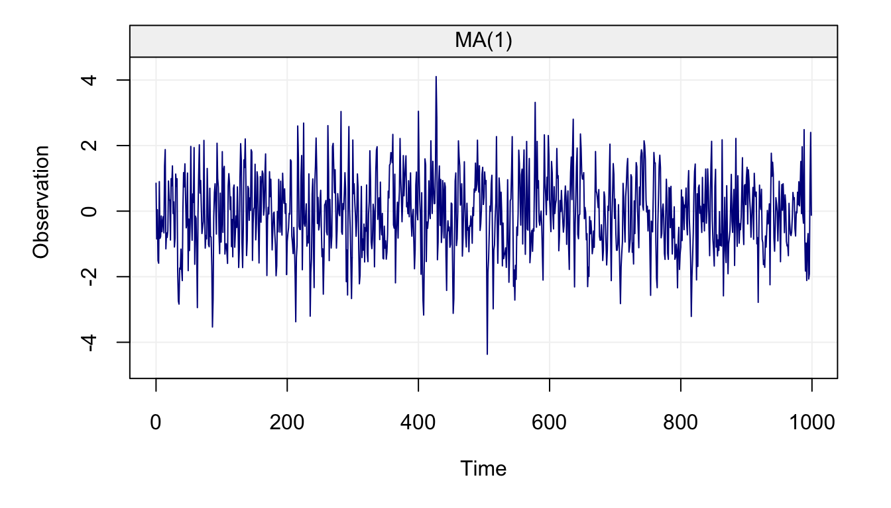
7.3.5 Linear Drift
A linear drift is a very simple deterministic time series model which can be expressed as
\[X_t = X_{t-1} + \omega, \]
where \(\omega\) is a constant and with the initial condition \(X_0 = c\), where \(c\) is an arbitrary constant (typically zero). This process can be expressed in a more familiar form as follows:
\[ {X_t} = {X_{t - 1}} + \omega = \left( {{X_{t - 2}} + \omega} \right) + \omega = t{\omega} + c \]
Therefore, a (linear) drift corresponds to a simple linear model with slope \(\omega\) and intercept \(c\).
A drift can simply be generated using the code below:
n = 100 # process length
omega = 0.5 # slope parameter
Xt = gen_gts(n, DR(omega = omega))
plot(Xt)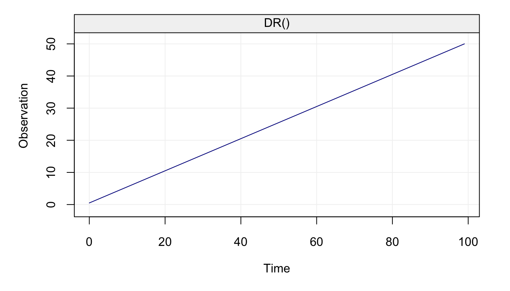
7.4 Composite Stochastic Processes
A composite stochastic process can be defined as the sum of underlying (or latent) stochastic processes. In this text, we will use the term latent time series as a synomym for composite stochastic processes. A simple example of such a process is given by
\[\begin{aligned} Y_t &= Y_{t-1} + W_t + \delta\\ X_t &= Y_t + Z_t, \end{aligned}\]
where \(W_t\) and \(Z_t\) are two independent Gaussian white noise processes. This model is often used as a first tool to approximate the number of individuals in the context ecological population dynamics. For example, suppose we want to study the population of Chamois in the Swiss Alps. Let \(Y_t\) denote the “true” number of individuals in this population at time \(t\). It is reasonable that \(Y_t\) is (approximately) the population at the previous time \(t-1\) (e.g the previous year) plus a random variation and a drift. This random variation is due to the natural randomness in ecological population dynamics and reflects changes such as the number of predators, the abundance of food, or weather conditions. On the other hand, ecological drift is often of particular interest for ecologists as it can be used to determine the “long” term trends of the population (e.g. if the population is increasing, decreasing, or stable). Of course, \(Y_t\) (the number of individauls) is typically unknown and we observe a noisy version of it, denoted as \(X_t\). This process corresponds to the true population plus a measurement error since some individuals may not be observed while others may have been counted several times. Interestingly, this process can clearly be expressed as a latent time series model (or composite stochastic process) as follows:
\[\begin{aligned} R_t &= R_{t-1} + W_t \\ S_t &= \delta t \\ X_t &= R_t + S_t + Z_t, \end{aligned}\]
where \(R_t\), \(S_t\) and \(Z_t\) denote, respectively, a random walk, a drift, and a white noise. The code below can be used to simulate such data:
n = 1000 # process length
delta = 0.005 # delta parameter (drift)
sigma2 = 10 # variance parameter (white noise)
gamma2 = 0.1 # innovation variance (random walk)
model = WN(sigma2 = sigma2) + RW(gamma2 = gamma2) + DR(omega = delta)
Xt = gen_lts(n, model)
plot(Xt)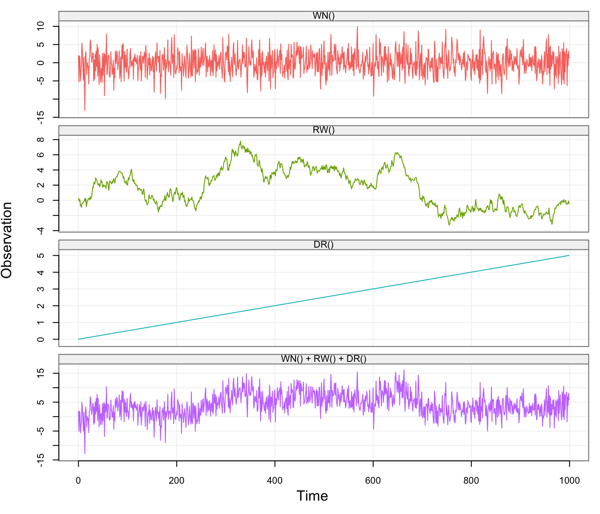
In the above graph, the first three plots represent the latent (unobserved) processes (i.e. white noise, random walk, and drift) and the last one represents the sum of the three (i.e. \((X_t)\)).
Let us consider a real example where these latent processes are useful to describe (and predict) the behavior of economic variables such as Personal Saving Rates (PSR). A process that is used for these settings is the “random-walk-plus-noise” model, meaning that the data can be explained by a random walk process in addition to which we observe some other process (e.g. a white noise model, an autoregressive model such as an AR(1), etc.). The PSR taken from the Federal Reserve of St. Louis from January 1, 1959, to May 1, 2015, is presented in the following plot:
# Load savingrt dataset
data("savingrt")
# Simulate based on data
savingrt = gts(as.vector(savingrt), start = 1959, freq = 12, unit_ts = "%",
name_ts = "Saving Rates", data_name = "US Personal Saving Rates")
# Plot savingrt simulation
plot(savingrt)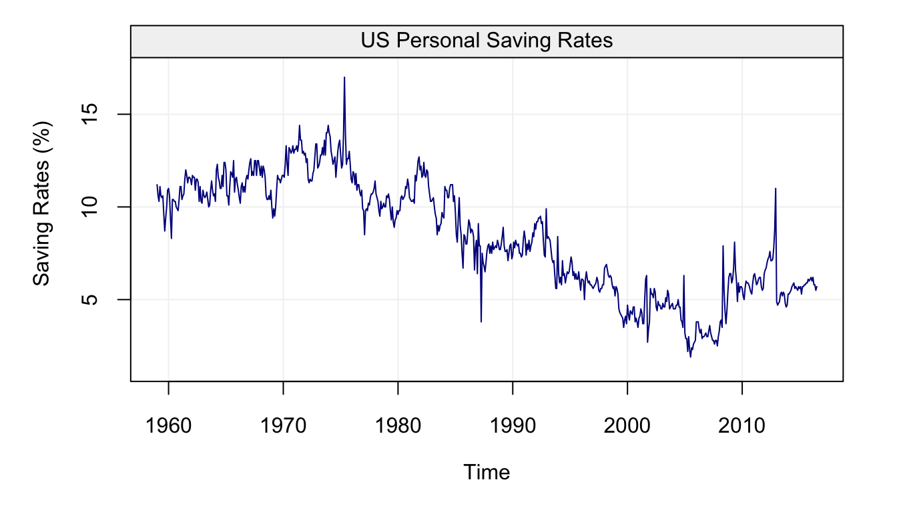
It can be observed that the mean of this process seems to vary over time, suggesting that a random walk can indeed be considered as a possible model to explain this data. In addition, aside from some “spikes” and occasional sudden changes, the observations appear to gradually change from one time point to the other, suggesting that some other form of dependence between them could exist.
Allan, D. W. 1966. “Statistics of Atomic Frequency Standards.” Proceedings of the IEEE 54 (2). IEEE:221–30.
Baltagi, Badi H. 2008. A Companion to Theoretical Econometrics. John Wiley & Sons.
Efron, B., and R. J. Tibshirani. 1994. An Introduction to the Bootstrap. CRC press.
El-Sheimy, N., H. Hou, and X. Niu. 2008. “Analysis and Modeling of Inertial Sensors using Allan Variance.” IEEE Transactions on Instrumentation and Measurement 57 (1). IEEE:140–49.
Granger, C. W. J. 1969. “Investigating Causal Relations by Econometric Models and Cross-Spectral Methods.” Econometrica: Journal of the Econometric Society. JSTOR, 424–38.
Greenhall, C. A. 1998. “Spectral Ambiguity of Allan Variance.” IEEE Transactions on Instrumentation and Measurement 47 (3). IEEE:623–27.
Hamilton, J. D. 1994. Time Series Analysis. Vol. 2. Princeton university press Princeton.
Komunjer, I. 2012. “Global Identification in Nonlinear Models with Moment Restrictions.” Econometric Theory 28 (4):719.
Newey, Whitney K, and Kenneth D West. 1986. “A Simple, Positive Semi-Definite, Heteroskedasticity and Autocorrelationconsistent Covariance Matrix.” National Bureau of Economic Research Cambridge, Mass., USA.
Newey, W. K., and D. McFadden. 1994. “Large Sample Estimation and Hypothesis Testing, V in Handbook of Econometrics.” In. Vol. 4. Elsevier, Amsterdam.
Percival, D. B., and P. Guttorp. 1994. “Long-memory processes, the Allan variance and wavelets.” In Wavelet Analysis and Its Applications, 4:325–44. Elsevier.
Percival, D. B., and A. T. Walden. 2006. Wavelet methods for time series analysis. Cambridge university press.
Percival, D. P. 1995. “On Estimation of the Wavelet Variance.” Biometrika 82 (3). Oxford University Press:619–31.
Xu, H., Stéphane Guerrier, Roberto Molinari, and Yuming Zhang. 2017. “A Study of the Allan Variance for Constant-Mean Nonstationary Processes.” IEEE Signal Processing Letters 24 (8). IEEE:1257–60.
Zhang, N. F. 2008. “Allan Variance of Time Series Models for Measurement Data.” Metrologia 45 (5). IOP Publishing:549.